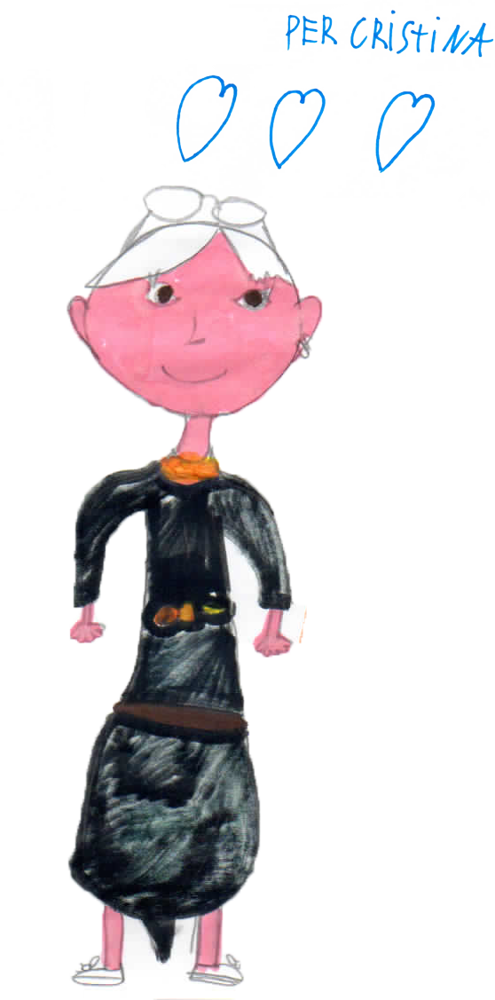

Da più di trenta anni mi occupo di bambini con problemi scolastici e
di linguaggio. Parlo con le loro famiglie e con i loro insegnanti
perché credo fermamente nell’importanza di un lavoro che veda la
collaborazione tra tutti coloro che si prendono cura del bambino. Mi
sono specializzata nei Disturbi Specifici di Apprendimento (Dislessia,
Disortografia, Discalculia) e nelle Difficoltà di Apprendimento e
ancora adesso sono la coordinatrice del gruppo di lavoro del Centro
Rieducazione Ortofonica di Firenze che si occupa di fare diagnosi e
che è accreditato dalla Regione Toscana.
Amo lavorare con i bambini e
supportarli nel percorso che li porta a decifrare quegli strani segni
che sono i grafemi fino ad arrivare a leggere o a tracciare sul foglio
combinazioni di vocali e consonanti che diventeranno parole, frasi,
pensieri. Mi impegno con loro quando devono lavorare sull’ortografia o
sui numeri perché il loro successo è anche il mio.
Cristina
Morozzi
Pedagogista specializzata nei
Disturbi Specifici di
Apprendimento
Richiedi un Appuntamento
Chi Sono

Servizi
Consulenza Pedagogica per problemi scolastici
Primo incontro che serve a conoscersi e mettere a fuoco le difficoltà segnalate dalla Scuola o notate dalle famiglie. Sulla base degli elementi raccolti dalla somministrazione di prove standardizzate si concorda una eventuale valutazione più approfondita o si progetta un intervento pedagogico.
Valutazione
- Valutazione dei prerequisiti scolastici nell’ultimo anno della Scuola d’Infanzia e programmazione di un eventuale intervento mirato al loro rafforzamento.
- Valutazione delle abilità di Lettura, Scrittura e Calcolo nella Scuola Primaria e Secondaria di I e II Grado e programmazione di un eventuale intervento mirato al loro rafforzamento.
Interventi di potenziamento
Interventi di potenziamento cognitivo/didattico in situazione già diagnosticate di Disturbo Specifico di Apprendimento (Dislessia, Disortografia, Discalculia), Difficoltà Aspecifiche di Apprendimento, Difficoltà di Comprensione del testo e Disturbo da Deficit di Attenzione (ADHD)
Supervisione e Supporto
- Supervisione delle modalità di supporto didattico messe in atto da figure non specializzate.
- Supporto alla progettazione didattica-metodologica-educativa del Piano Didattico Personalizzato redatto in base alla normativa sui DSAp (Legge 170) o sui Bisogni Educativi Speciali (BES).
Incontri informativi di gruppo con i genitori
Periodicamente saranno organizzati degli incontri con i genitori aperti a chiunque voglia partecipare. Durante gli incontri saranno approfondite tematiche relative al supporto dei bambini con difficoltà di apprendimento e si cercherà di chiarire i dubbi e rispondere alle domande presentate dalle famiglie.